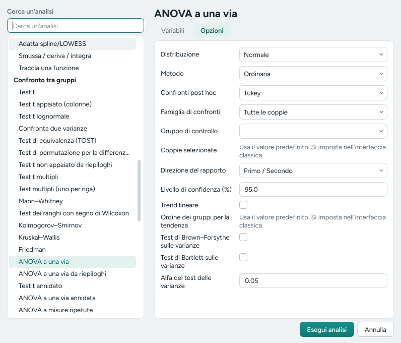
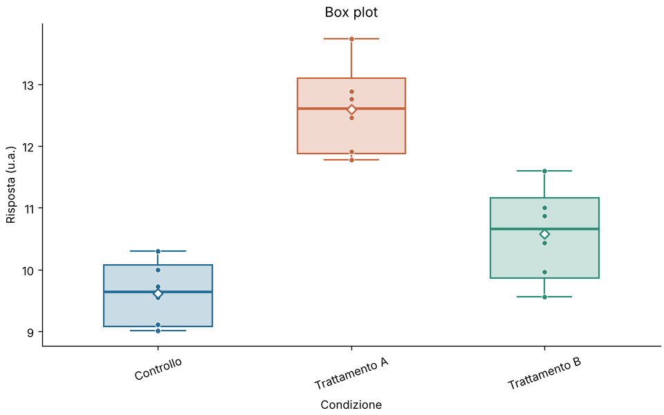
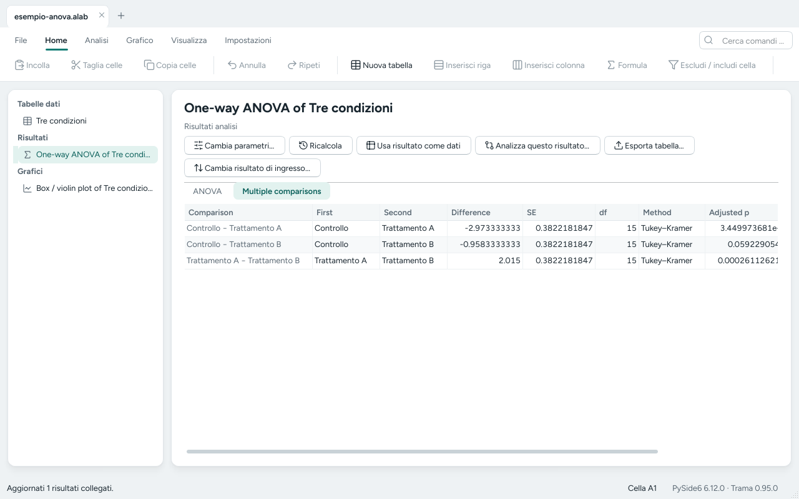

GuidaStatisticaANOVA
Confrontare più condizioni con ANOVA
Hai misurato una risposta su sei unità per ciascuna di tre condizioni: un controllo e due trattamenti. Le medie sono davvero diverse? E quali coppie lo sono?
- Verificato Trama 0.95.0 beta
- Dati 18 unità sintetiche
- Seme 7
- Lettura 8 minuti
Quando usarlo
L’ANOVA a una via confronta le medie di tre o più gruppi indipendenti. Il test F risponde a una sola domanda: almeno una media è diversa dalle altre? Per sapere quali coppie differiscono servono i confronti post hoc, che correggono la soglia per il numero di confronti fatti.
- Confronti da fare. Tutte le coppie: Tukey (con gruppi di numerosità diversa diventa Tukey–Kramer). Solo ogni trattamento contro il controllo: Dunnett, che con meno confronti ha più potenza.
- Unità indipendenti. Ogni riga deve essere un’unità sperimentale distinta: un animale, un pozzetto seminato a parte, un esperimento ripetuto in un altro giorno. Le repliche tecniche della stessa unità non contano come unità. Il caso limite mostra perché.
- Dispersioni simili. L’ANOVA ordinaria assume la stessa varianza nei gruppi. Se le deviazioni standard sono molto diverse, scegli Welch e i confronti Games–Howell.
- Residui senza asimmetrie forti. Con sei unità per gruppo il test regge scostamenti moderati dalla normalità, non code lunghe o valori anomali.
I dati
Una tabella con una riga per unità e due colonne: Condizione, il testo che dice a quale gruppo appartiene la riga, e Risposta (u.a.), la misura. Sei unità per condizione, nessun valore mancante. Le deviazioni standard sono 0,50, 0,72 e 0,74: la più grande è 1,5 volte la più piccola.
| Condizione | Risposta (u.a.) |
|---|---|
| Controllo | 10,00 |
| Controllo | 10,30 |
| Controllo | 9,73 |
| … 15 righe in più | |
In Trama
- Apri il progetto con File → Apri…, oppure porta il CSV con File → Importa nel progetto….
- Seleziona la tabella Tre condizioni e scegli Analisi → Analizza… (Ctrl+Maiusc+A).
- Nell’elenco delle analisi apri Confronto tra gruppi → ANOVA a una via. Nella scheda Variabili scegli Risposta =
Risposta (u.a.)e Gruppo =Condizione. - Nella scheda Opzioni imposta i valori qui sotto e premi Esegui analisi.
- Per il grafico usa Grafici → Grafico a scatola / violino con Risposta singola, Mostra media e Sovrapponi osservazioni. Nel progetto allegato è già pronto.
| Distribuzione | Normale |
|---|---|
| Metodo | Ordinaria |
| Confronti post hoc | Tukey |
| Famiglia di confronti | Tutte le coppie |
| Livello di confidenza (%) | 95 |
Mostra la schermata della scheda Opzioni

Leggi il risultato
Il foglio dei risultati ha due schede, ANOVA e Multiple comparisons. Nella 0.95.0 i nomi delle schede e delle colonne restano in inglese anche con l’interfaccia italiana.


| Termine | gl | F | p |
|---|---|---|---|
| Condizione | 2 | 31,53 | 4,2 × 10⁻⁶ |
| Residuo | 15 |
Medie: controllo 9,62, trattamento A 12,59, trattamento B 10,58 u.a. Il quadrato medio residuo è 0,438.
Con F(2, 15) = 31,53 e p < 0,0001 almeno una media differisce dalle altre. Quali, lo dicono i confronti di Tukey–Kramer:
| Confronto | Differenza | IC 95% | p aggiustato |
|---|---|---|---|
| Controllo − Trattamento A | −2,97 | −3,97 · −1,98 | < 0,0001 |
| Controllo − Trattamento B | −0,96 | −1,95 · 0,03 | 0,059 |
| Trattamento A − Trattamento B | 2,02 | 1,02 · 3,01 | 0,0003 |
Il trattamento A alza la risposta di circa 3 u.a. rispetto al controllo e di 2 rispetto a B, con intervalli lontani dallo zero. Per B contro il controllo l’intervallo va da −1,95 a 0,03: include lo zero, ma anche differenze di quasi 2 u.a. Il risultato non è conclusivo, il che non significa che B non abbia effetto. Riporta l’intervallo, non solo il p.
Mostra la schermata della scheda Multiple comparisons

Le repliche tecniche contate come unità
Supponi di aver letto ogni unità tre volte e di mettere in tabella tutte le 54 letture, come se fossero 54 unità indipendenti. Le medie dei gruppi restano le stesse, ma Trama non può sapere che le tre letture vengono dalla stessa unità: i gradi di libertà residui passano da 15 a 51 e l’errore standard di ogni differenza da 0,382 a 0,218.
| 18 unità | 54 letture | |
|---|---|---|
| F (gl) | 31,53 (2; 15) | 97,02 (2; 51) |
| Controllo − B: differenza | −0,96 | −0,96 |
| Controllo − B: errore standard | 0,382 | 0,218 |
| Controllo − B: p aggiustato | 0,059 | 0,00016 |
La differenza fra controllo e B sembra ora netta, ma è un effetto del conteggio, non dei dati. È la pseudoreplicazione. Come rimediare: fai la media delle repliche di ogni unità e analizza una riga per unità. In questo esempio le medie per unità ridanno esattamente la tabella principale. In alternativa, Trama ha l’ANOVA a una via annidata, che però vuole i dati in una tabella Annidata.
Come accorgersene. I gradi di libertà residui superano il numero di unità meno il numero di gruppi; la tabella ha una colonna che identifica l’unità e valori che si ripetono a gruppi di tre.
Cosa riportare
- Che cos’è un’unità e quante ce ne sono per condizione; se ci sono repliche tecniche, come sono state riassunte.
- Il tipo di ANOVA (ordinaria o Welch) e il metodo dei confronti, con la famiglia di confronti corretta.
- F con i due gradi di libertà, le differenze con l’intervallo di confidenza e il p aggiustato.
- Versione di Trama e progetto
.alabche ripete il calcolo.
La risposta di sei unità per condizione è stata confrontata con un’ANOVA a una via (F(2, 15) = 31,53, p < 0,001) seguita dai confronti di Tukey–Kramer fra tutte le coppie, in Trama 0.95.0 beta. Il trattamento A ha aumentato la risposta rispetto al controllo (differenza 2,97 u.a.; IC 95% 1,98–3,97) e al trattamento B (2,02 u.a.; IC 95% 1,02–3,01). La differenza fra trattamento B e controllo non è stata conclusiva (0,96 u.a.; IC 95% −0,03–1,95; p aggiustato = 0,059).
Fonti
- Tukey J. W. (1949). Comparing individual means in the analysis of variance. Biometrics, 5(2), 99–114. doi:10.2307/3001913
- Kramer C. Y. (1956). Extension of multiple range tests to group means with unequal numbers of replications. Biometrics, 12(3), 307–310. doi:10.2307/3001469
- Welch B. L. (1951). On the comparison of several mean values: an alternative approach. Biometrika, 38(3–4), 330–336. doi:10.1093/biomet/38.3-4.330
- Hurlbert S. H. (1984). Pseudoreplication and the design of ecological field experiments. Ecological Monographs, 54(2), 187–211. doi:10.2307/1942661
- Lazic S. E. (2010). The problem of pseudoreplication in neuroscientific studies: is it affecting your analysis? BMC Neuroscience, 11, 5. doi:10.1186/1471-2202-11-5
Verificato con Trama 0.95.0 beta (tag v0.95.0, commit 4c07db6) il 20 novembre 2026. Calcolo in analisi/inference.py.